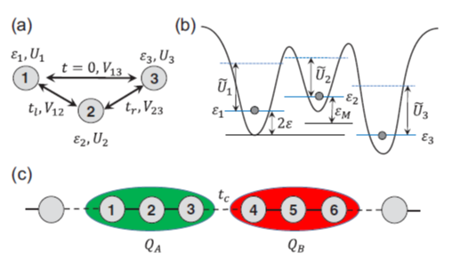

Quantum Physics and Quantum Computing Theory Group
The Unviersity of Texas at El Paso
Department of Physics
I am a theoretical condensed matter physicist and my research focuses on physical implementation of quantum compting in solid state devices.
I have been studying possible qubit designs and efficient schemes for gate operations between qubits.
Current research areas include superconducting qubits, semiconductor quantum dot spin qubits, and quantum algorithms for applications in near-term noisy intermediate-scale quantum (NISQ) devices.
I am also interested in using novel materials for new types of quantum computing devices.
Currently hiring a postdoctoral researcher.
Please contact me (email: yshim@utep.edu) for more details about this position.
(Last update: Dec. 24, 2020)
Principal Investigator
Prof. Yun-Pil Shim (CV)

- Education
- Ph.D. in Physics (2006), The University of Texas at Austin
- B.S. in Physics (2000), Seoul National University (Korea)
- Appointments
- Assistant Professor (09/2020 ~ present), Department of Physics, University of Texas at El Paso
- Faculty Specialist (03/2016 ~ 08/2020), Laboratory for Physical Sciences & University of Maryland
- Research Associate (11/2012 ~ 03/2016), Laboratory for Physical Sciences & University of Maryland
- Research Associate (09/2009 ~ 11/2012), Department of Physics, University of Wisconsin-Madison
- Research Associate (12/2006 ~ 09/2009), National Research Council of Canada
Current Students
Mr. Miguel Rodriguez (MS student, Fall 2020 ~ present)
Theoretical Research on Quantum Computing
Quantum computing is a budding technology that will do computations that can’t be done in classical supercomputers (quantum supremacy),
and will revolutionize the scientific research and the society. It is still in its early stage, but commercial quantum computers are already emerging.
Here are some of my research directions.
Superconducting Qubits

- Composite superconducting qubit design for baseband-only gate operations
- New types of Josephson junctions for superconducting qubits
- Phys. Rev. X 10, 041051 (2020),
Nat. Commun. 7, 11059 (2016)
Semiconductor Spin Qubits
- 
- Always-on Exchange Only (AEON) Qubit
- Noise-insensitive gate operations
- Hole-based qubits in semiconductor
- Phys. Rev. B 97, 155402 (2018),
Phys. Rev. B 93, 121410(R) (2016)
Quantum Algorithms
- Useful applications of currently available quantum computers (VQE, QAOA, etc)
- Quantum Machine Learning using Tensor Network
Quantum Materials for Quantum Computing
- Superconducting Silicon
- 2D materials
- Topological materials
- Nat. Commun. 5, 4225 (2014)
Selected Publications
For the full list, see the
Google Scholar
page.
- Daniel L. Campbell, Yun-Pil Shim, et al., Universal Nonadiabatic Control of Small-Gap Superconducting Qubits,
Phys. Rev. X 10, 041051 (2020).
- Yun-Pil Shim, Rusko Ruskov, Hilary M. Hurst, and Charles Tahan, Induced quantum dot probe for material characterization,
Appl. Phys. Lett. 114, 1523105 (2019).
- Yun-Pil Shim and Charles Tahan, Barrier versus tilt exchange gate operations in spin-based quantum computing,
Phys. Rev. B 97, 155402 (2018).
- Yun-Pil Shim and Charles Tahan, Charge-noise-insensitive gate operations for always-on exchange-only qubits,
Phys. Rev. B 93, 121410(R) (2016).
- Yun-Pil Shim and Charles Tahan, Semiconductor-inspired design principles for superconducting quantum computing,
Nat. Commun. 7, 11059 (2016).
- Yun-Pil Shim and Charles Tahan, Superconducting-semiconductor quantum devices: from qubits to particle detectors,
IEEE J. Sel. Top. Quantum Electron. 21, 9100209 (2015).
- Yun-Pil Shim and Charles Tahan, Bottom-up superconducting and Josephson junction devices inside a group-IV semiconductor,
Nat. Commun. 5, 4225 (2014).
- Chang-Yu Hsieh, Yun-Pil Shim, Marek Korkusinski, and Pawel Hawrylak, Physics of lateral triple quantum dot molecules with controlled electron numbers,
Rep. Prog. Phys. 75, 114501 (2012).
- Yun-Pil Shim, Sangchul Oh, Xuedong Hu, and Mark Friesen, Controllable anisotropic exchange coupling between spin qubits in quantum dots,
Phys. Rev. Lett. 106, 180503 (2011).
- Y.-P. Shim, A. Sharma, C.-Y. Hsieh, and P. Hawrylak, Artificial Haldane gap material on a semiconductor chip,
Solid State Commun. 105, 2065 (2010).
- Y.-P. Shim, F. Delgado, and P. Hawrylak, Tunneling spectroscopy of spin-selective Aharonov-Bohm oscillations in lateral triple quantum dot molecules,
Phys. Rev. B 80, 115305 (2009).
- Y.-P. Shim and A. H. MacDonald, Spin-orbit interactions in bilayer excitonic condensate ferromagnets,
Phys. Rev. B 79, 235329 (2009).
- F. Delgado, Y.-P. Shim, et al., Spin-selective Aharonov-Bohm oscillations in a lateral triple quantum dot,
Phys. Rev. Lett. 101, 226810 (2008).
- Yun-Pil Shim and Pawel Hawrylak, Gate-controlled spin-spin interactions in lateral quantum dot molecules,
Phys. Rev. B 78, 165317 (2008).
- Y.-P. Shim, R. A. Duine, and A. H. MacDonald, Fulde-Ferrell-Larkin-Ovchinnikov vortex lattice states in fermionic cold-atom systems,
Phys. Rev. A 74, 053602 (2006).